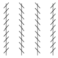
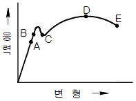
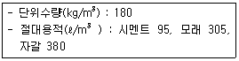

건설안전산업기사 (2004-09-05 기출문제)
1과목: 산업안전관리론
1. 근로자수 500인, 근로손실일수 2500일, 연근로시간수 48시간×50주, 1인당 연간 잔업이 100시간 일 때 강도율은 얼마인가?
- 2
- 2.5
- 3
- 3.51
(정답률: 23%)

2. 위험훈련예지 4단계에 관한 내용 중 잘못된 것은?
- 1라운드 : 본질추구
- 2라운드 : 위험요인결정
- 3라운드 : 대책수립
- 4라운드 : 목표설정
(정답률: 60%)
3. 사고방지의 기본원리에 대하여 설명한 것이다. 해당되지 않는 것은?
- 관리책임의 원칙
- 원인계기의 원칙
- 손실우연의 원칙
- 예방가능의 원칙
(정답률: 79%)
4. 다음 중 안전의 3E 원칙과 가장 거리가 먼 것은?(단, Harvey주장임)
- Education
- Engineering
- Economic
- Enforcement
(정답률: 50%)
5. 다음의 부주의 발생 현상 중 특수한 질병의 경우에 주로 나타나는 것은?
- 의식의 단절
- 의식의 우회
- 의식 수준의 저하
- 의식의 과잉
(정답률: 60%)
6. 대형 사업장에 적합한 안전관리의 조직은 다음 중 어느 것인가?
- 라인조직(line)
- 참모조직(staff)
- 병렬식 조직
- 라인 및 참모조직의 혼합형
(정답률: 66%)
7. RMR에 의한 작업강도에서 경작업이란 작업강도가 얼마인 작업을 말하는가?
- 0~2
- 2~4
- 4~7
- 7~9
(정답률: 34%)
8. 다음 중 적응(適應)의 기재에 포함되지 않는 것은?
- 갈등(conflict)
- 억압(repression)
- 공격(aggression)
- 합리화(rationalization)
(정답률: 35%)
9. 다음의 착시 현상은?

- Herling의 착시
- Köhler의 착시
- Müller-Lyer의 착시
- Zöller의 착시
(정답률: 54%)
10. Off.J.T(Off the Job Training)의 특징이 아닌 것은?
- 전문가를 강사로 초빙 가능하다.
- 많은 지식, 경험을 교류할 수 있다.
- 다수의 근로자들에게 조직적 훈련이 가능하다.
- 직장의 실정에 맞게 실제적 훈련이 가능하다.
(정답률: 73%)
11. 안전교육시 인간의 5관을 최대한 활용하는 것이 교육의 효과를 높이는 지름길이다. 5관의 효과치로 올바른 것은?
- 미각 - 30%
- 촉각 - 40%
- 청각 - 50%
- 시각 - 60%
(정답률: 60%)
12. 리더십의 유형 중 권위주의적 리더행동이 적합한 사업장은?
- 회사의 창업직후 또는 부하의 교육수준이 낮은 사업장
- 회사의 창업직후 또는 부하의 교육수준이 높은 사업장
- 회사의 수준이 안정적이고 부하의 교육수준이 낮은 사업장
- 회사의 수준이 안정적이고 부하의 교육수준이 높은 사업장
(정답률: 46%)
13. 리더십 이론 중의 하나인 피들러의 상황부응 이론에서 관계지향적 리더의 L.P.C(least preferred coworker) 점수는 어떻게 나타나는가?
- 높다.
- 낮다.
- 중간이다.
- 상황에 따라 다르다.
(정답률: 45%)
14. 자신의 불만이나 불안을 해소시키기 위해 남에게 뒤집어씌우는 식의 적응기제에 해당하는 것은?
- 투사
- 합리화
- 동일시
- 보상
(정답률: 69%)
15. 교육훈련 기법 가운데 토의법의 장점과 관계가 가장 먼 것은?
- 민주적⋅협력적이다.
- 시간의 계획과 통제가 가능하다.
- 적극적인 사고의 유발이 가능하다.
- 지식⋅경험을 자유로이 교환할 수 있다.
(정답률: 80%)
16. 하버드대학에서 개발된 교육기법으로 고도의 판단력을 양성할 수 있는 특색을 갖는 것은?
- 역할연기
- 시청각 교육
- 비지니스 게임
- 사례연구
(정답률: 37%)
17. 무재해 운동 이념 가운데 직장의 위험요인을 행동하기전에 예지하여 발견, 파악, 해결하는 것은 다음 중 무엇을 의미하는 것인가?
- 선취의 원칙
- 무의 원칙
- 인간존중
- 참가의 원칙
(정답률: 67%)
18. 안전성적을 나타내는 지표로서 빈도율(FR)과 강도율(SR)이 있다. 이 두 가지를 하나로 묶어서 나타낸 지수는 어느 것인가?
- FSI(종합재해지수)
- FR(빈도율)
- 연천인율
- 강도율
(정답률: 85%)
19. 직무만족에 긍정적인 영향을 미칠 수 있고 그 결과 개인 생산능력의 증대를 가져오는 인간의 특성을 의미하는 용어는?
- 위생 요인
- 동기부여 요인
- 성숙 - 미성숙
- 자아실현
(정답률: 64%)
20. 과거에 경험하였던 것과 비슷한 상태에 부딪쳤을 때 떠오르는 것을 무엇이라 하는가?
- 재생
- 기명
- 파지
- 재인
(정답률: 50%)
2과목: 인간공학 및 시스템안전공학
21. 조정장치에서 어떤 것을 켤 때 기대되는 운동방향이 아닌 것은?
- 스위치를 위로 올린다.
- 버튼을 우측으로 민다.
- 조정장치를 앞으로 민다.
- 조정장치를 반시계 방향으로 돌린다.
(정답률: 78%)
22. 높은 소음으로 생긴 생리적 변화가 아닌 것은?
- 근육이완
- 혈압상승
- 동공팽창
- 심장박동수 증가
(정답률: 55%)
23. 사업장에서의 소음대책 중 적절하지 않은 것은?
- 소음원의 격리
- 소음수준 감소
- 보호구의 착용
- 소음의 반사
(정답률: 57%)
24. 동적인 촉각적 표시장치에서 기계적 자극에는 어떤 것이 있는가?
- 표면촉감
- 맥동전류 자극
- 전기자극
- 진동기
(정답률: 44%)
25. 인간-기계 통합체계의 형태에 해당되지 않는 것은?
- 수동
- 자동
- 감지
- 기계화
(정답률: 70%)
26. 자동제어 중 feed back 제어에 대한 설명이다. 틀린 것은?
- 순서에 의하여 실행한다.
- 폐회로(closed-loop)제어라 한다.
- 제어의 목표치와 결과치를 항상 비교한다.
- 자동화기기와 같이 연속적인 조정을 필요로 한다.
(정답률: 12%)
27. 신기술, 신공법을 도입함에 있어서 설계, 제조, 사용의 전과정에 걸쳐서 위험성의 게재여부를 사전에 검토하는 관리기술을 무엇이라 하는가?
- 예비위험 분석
- 위험성 평가
- 안전분석
- 안전성 평가
(정답률: 34%)
28. 광원의 밝기가 100[c]이고, 10[ft]떨어진 곡면을 비출 때의 조도는?
- 1 ft-c
- 10 ft-c
- 100 ft-c
- 1000 ft-c
(정답률: 27%)
29. 다음 중 의자 설계시의 원칙이 아닌 것은?
- 체중분포
- 의자 좌판의 높이
- 의자 등판의 높이
- 의자 좌판의 깊이와 폭
(정답률: 15%)
30. 평균고장시간(MTTF)이 4×108시간인 요소 2개가 병렬 체계를 이루었을 때 체계의 수명은?
- 2×108시간
- 4×108시간
- 6×108시간
- 8×108시간
(정답률: 27%)
31. 인체 계측 자료의 응용원칙 중 틀린 것은?
- 사용빈도
- 조절범위
- 최대치수와 최소치수
- 평균치를 기준으로 한 설계
(정답률: 79%)
32. 추위압박(cold stress)에 관한 설명 중 올바른 것은?
- 생존한계는 피부온도 섭씨 28도 이다.
- 생존한계는 피부온도 섭씨 0도 이다.
- 추적작업이 가장 큰 영향을 받는다.
- 더위압박 보다 덜 위험하다.
(정답률: 40%)
33. 촉각적 표시장치에서 기본 정보 수용기로 주로 사용되는 것은?
- 귀
- 손
- 눈
- 코
(정답률: 72%)
34. FTA에 사용되는 게이트 기호의 종류가 아닌 것은?
- AND게이트
- OR게이트
- 억제게이트
- 통합게이트
(정답률: 58%)
35. 사물 지역 구성 등을 사진, 그림 혹은 그래프로 묘사한 정보의 유형은?
- 정성적 정보
- 경계 및 신호정보
- 묘사적 정보
- 시차적 정보
(정답률: 55%)
36. 선형조정장치를 25cm 옮겼을 때 선형표시 장치가 5cm 움직였다면 통제 표시비(C/D비)는?
- 0.2
- 2.5
- 4
- 5
(정답률: 60%)
37. 체계분석 및 설계에 있어서의 인간공학의 가치가 아닌것은?
- 성능의 향상
- 훈련 비용의 증가
- 인력 이용율의 향상
- 생산 및 보전의 경제성 증대
(정답률: 79%)
38. 고장률 곡선에서 우발고장 기간에 발생하는 고장에 대한 설명 중 틀린 것은?
- 우발고장 기간에 실시하는 설비보전방식은 사후 보전이 적당하다.
- 불규칙적으로 고장이 발생하며 고장률[λ(t)]은 시간에 관계없이 일정하다.
- 최선의 검사방법으로도 탐지되지 않는 결함 때문에 고장이 일어난다.
- 설계 및 제조의 오류, 부적절한 설치나 시동 등이 고장의 원인이며, 과부하가 걸리지 않도록 해야 한다.
(정답률: 22%)
39. 다음 중 피부감각기관의 감각수용기를 올바르게 표현한 것은?
- 압각, 지각, 미각
- 압각, 온각, 통각, 냉각
- 후각, 촉각, 온각, 냉각
- 지각, 시각, 미각, 열각
(정답률: 74%)
40. 기계의 통제를 위한 통제기기의 선택조건이 아닌 것은?
- 계기지침의 일치성이 있어야 한다.
- 식별이 어려운 통제기기를 선택해야 한다.
- 특정 목적에 사용되는 통제기기는 여러개를 조합하여 사용하는 것이 좋다.
- 통제기기가 복잡하고 정밀한 조절이 필요한 때에는 멀티로테이션 컨트롤기기를 사용하는 것이 좋다.
(정답률: 67%)
3과목: 건설시공학
41. 지반조사를 하는데 적당치 않은 방법은?
- 터파보기
- 물리적 탐사법
- 탐사간
- 우물통 공법
(정답률: 53%)
42. 토공사시 흙막이의 버팀대 위치로 가장 적당한 곳은?
- 기초파기 윗면에서 1/3 지점의 깊이
- 기초파기 밑바닥에서 1/2 지점의 높이
- 기초파기 윗면에서 1/2 지점의 깊이
- 기초파기 밑바닥에서 1/3 지점의 높이
(정답률: 53%)
43. 다음 항목 중 공사관리의 3대 목표로 옳은 것은?
- 품질관리, 공정관리, 물가관리
- 품질관리, 공정관리, 원가관리
- 품질관리, 원가관리, 안전관리
- 안전관리, 품질관리, 물가관리
(정답률: 47%)
44. 모르타르 혹은 콘크리트를 호스를 사용하여 압축공기로 시공면에 뿜는 공법으로 옳은 것은?
- 프리팩트공법
- 진공탈수공법
- 숏크리트공법
- 슬립폼공법
(정답률: 69%)
45. 철근콘크리트공사에서 콘시스턴시(consistency)의 정의로 옳은 것은?
- 반죽질기 여하에 따르는 작업의 난이도 정도 및 재료 분리에 저항하는 정도를 나타내는 굳지 않은 콘크리트의 성질
- 주로 수량의 다소에 따르는 반죽의 되고 진 정도를 나타내는 굳지 않은 콘크리트의 성질
- 거푸집에 쉽게 다져 넣을 수 있고, 거푸집을 제거하면 천천히 변하는 굳지 않은 콘크리트의 성질
- 굵은골재의 최대치수 등에 따르는 마무리하기 쉬운 정도를 나타내는 굳지 않은 콘크리트의 성질
(정답률: 44%)
46. 벽식 철근콘크리트 구조를 시공할 경우 벽과 바닥의 콘크리트 타설을 한 번에 가능하게 하기 위하여 벽체용 거푸집과 슬래브 거푸집을 일체로 제작하여 한번에 설치하고 해체할 수 있도록 한 시스템거푸집은?
- 갱폼
- 클라이밍폼
- 슬립폼
- 터널폼
(정답률: 70%)
47. 다음 중 철골세우기용 장비가 아닌 것은?
- 스티프 레그데릭(stiff leg derrick)
- 드래그라인(drag line)
- 가이데릭(guy derrick)
- 진폴(gin pole)
(정답률: 67%)
48. 철골공사의 구멍뚫기에 있어서 앵커볼트의 공칭 축직경 (d)에 대한 구멍지름으로 옳은 것은?
- d + 1.0mm
- d + 1.5mm
- d + 3.0mm
- d + 5.0mm
(정답률: 24%)
49. 지질조사를 위한 보링(boring)계획에 대한 설명으로 가장 거리가 먼 것은?
- 보링의 깊이는 경미한 건물의 경우 기초폭의 1.5∼2.0배 정도로 한다.
- 간격은 약 60m 정도로 하고, 중간지점은 물리적 지하 탐사법에 의해 보충한다.
- 부지 내에서 3개소 이상 행하는 것이 바람직하다.
- 채취시료는 잠시라도 햇빛에 방치해서는 안 되며 충분한 양생을 취한다.
(정답률: 11%)
50. 제자리 콘크리트 말뚝을 시공할때 목표지점까지 케이싱튜브(casing tube)로 공벽(孔壁)을 보호하면서 굴착하는 공법은?
- 심초말뚝공법
- 베노토(benoto)말뚝공법
- 어스 드릴(earth drill)말뚝공법
- 리버스 서큘레이션(reverse circulation)말뚝공법
(정답률: 45%)
51. 거푸집 공사 중 콘크리트의 측압에 관한 사항 중 틀린것은?
- 이어붓기 속도가 빠를수록 측압이 크다.
- 묽은 콘크리트일수록 측압이 낮다.
- 거푸집의 수평단면이 작을수록 측압이 작다.
- 철골 또는 철근량이 많을수록 측압은 작아진다.
(정답률: 54%)
52. 블리딩(Bleeding)을 옳게 설명한 것은?
- 콘크리트가 굳어가는 현상
- 아직 굳지 않는 콘크리트의 이상 응결정도
- 양생 초기 단계에서 생기는 미세한 물질
- 현장 콘크리트 타설 중 수분이 상승하는 현상
(정답률: 42%)
53. 실비정산보수가산계약(cost plus fee contract)을 보수를 지급하는 방식으로 분류할 때 해당되지 않는 것은?
- 도급금액을 일정액으로 결정하여 계약하는 방식
- 공사의 진척에 따라 실제 공사비의 일정 비율을 보수로 지급하는 방식
- 미리 일정액을 보수로 정하는 방식
- 설계 변경에 관계되는 공사금액에 따라서 변동률을 적용하여 지급하는 방식
(정답률: 24%)
54. 기존건물 또는 공작물의 기초나 지정을 보강하거나 또는 거기에 새로운 기초를 삽입하거나 지지면을 더 깊은 지반에 옮겨 안전하게 하기 위한 공법은?
- 언더피닝공법
- 그라우팅공법
- 샌드드레인공법
- 콤포저공법
(정답률: 60%)
55. 전체공사의 진척이 원활하며 공사의 시공 및 책임한계가 명확하여 공사관리가 쉽고 하도급의 선택이 용이한 도급 제도는 어느 것인가?
- 분할도급제도
- 일식도급제도
- 단가도급제도
- 공사별도급제도
(정답률: 77%)
56. 철골세우기 공사에서 앵커볼트매입공법에 속하지 않는 것은?
- 고정매입공법
- 가동매입공법
- 이동매입공법
- 나중매입공법
(정답률: 15%)
57. 다음 중 건설공사의 클레임유형에서 거리가 먼 것은?
- 현장조건 변경에 따른 클레임
- 공사지연에 의한 클레임
- 작업범위 관련 클레임
- 작업인원 축소에 관한 클레임
(정답률: 71%)
58. 콘크리트타설시 다짐을 위해 사용하는 진동다짐기의 종류가 아닌 것은?
- 막대형진동기
- 거푸집진동기
- 표면진동기
- 원형진동기
(정답률: 37%)
59. 다음 중 콘크리트제품의 양생방법의 분류에 속하지 않는 것은?
- 습윤양생
- 건조양생
- 증기양생
- 오토클레이브양생
(정답률: 42%)
60. 말뚝박기 시공의 주의사항에 대한 설명 중 옳지 않은 것은?
- 나무말뚝은 말뚝머리가 상수면 위로 보이도록 박아야 한다.
- 말뚝을 예정한 위치까지 도달시키려고 무리하게 쳐박을 때에는 말뚝 끝의 손상과 갈라짐에 주의한다.
- 말뚝박기는 중단하지 않고 최종까지 계속적으로 박아야 한다.
- 말뚝위치는 정확히 하고 수직으로 똑바로 박는다.
(정답률: 30%)
4과목: 건설재료학
61. 점토제품인 위생도기의 구비조건으로 옳지 않은 것은?
- 외관이 아름답고 청결할 것
- 내산성 및 내알칼리성이 클 것
- 수세나 청소에 적합할 것
- 흡습성이 크며 시공이 용이할 것
(정답률: 61%)
62. 인조석바름 재료에 관한 설명 중 옳지 않은 것은?
- 주재료는 시멘트, 종석, 돌가루, 안료 등이다.
- 돌가루는 부배합의 시멘트가 건조수축할 때 생기는 균열을 방지하기 위해 혼입한다.
- 안료는 물에 녹지 않고 내알칼리성이 있는 것을 사용한다.
- 종석의 알의 크기는 2.5mm체에 100% 통과하는 것으로 한다.
(정답률: 42%)
63. 시멘트 제조시 클링커(clinker)에 석고를 첨가하는 주된 이유는?
- 조기강도의 증진
- 응결속도의 조절
- 시멘트 색깔의 조절
- 내약품성의 증대
(정답률: 35%)
64. 점토 재료에 관한 설명 중 옳지 않은 것은?
- 점토의 주성분은 실리카(SiO2), 알루미나(Al2O3) 등이다.
- 점토의 가소성이 너무 큰 경우에는 모래나 샤모트 등을 혼합하여 조절한다.
- 보통벽돌, 기와, 토관의 원료로는 주로 석회질 점토가 사용된다.
- 점토의 소성온도 측정법으로 제게르 콘(Seger Cone) 법이 있다.
(정답률: 24%)
65. 다음 중 구조재로 사용이 가장 부적당한 것은?
- 경질사암
- 응회암
- 휘석안산암
- 화강암
(정답률: 32%)
66. 강(鋼)의 응력-변형도 곡선의 그림에서 A와 C점이 나타내는 것은?

- A : 탄성한도, C : 상항복점
- A : 인장강도, C : 비례한도
- A : 비례한도, C : 하항복점
- A : 하항복점, C : 파괴점
(정답률: 45%)
67. 콘크리트용 골재에 관한 설명으로 부적당한 것은?
- 골재의 조립률이란 일정 용기내에 골재가 차지하는 실제 용적의 비율이다.
- 일반적으로 비중이 큰 것은 공극, 흡수율이 적으므로 동결에 의한 손실도 적고 내구성이 크다.
- 실적률이 클수록 골재의 입도분포가 적당하여 시멘트 페이스트량이 적게 든다.
- 알칼리 골재반응은 골재 중의 실리카질광물이 시멘트중의 알칼리성분과 화학적으로 반응하는 것이다.
(정답률: 18%)
68. 다음 중 실(seal)재가 아닌 것은?
- 코킹재
- 퍼티
- 실링재
- 트래버틴
(정답률: 65%)
69. 석재의 선택이나 시공시 주의 사항과 가장 거리가 먼 것은?
- 치수가 1m3 이상으로 지나치게 큰 것은 피하도록 한다.
- 석재는 취약하므로 구조재는 직압력재로만 사용하도록 한다.
- 외부나 바닥에 사용할 때는 내수성 및 내구성에 주의 하도록 한다.
- 석재의 모양은 예각으로 하고 재질에 따라 적당한 가공을 하도록 한다.
(정답률: 43%)
70. 부순모래를 이용한 콘크리트에 대한 설명 중 틀린 것은?
- 강모래를 이용한 콘크리트와 동일한 슬럼프를 얻기 위해서는 단위 수량이 더 필요하다.
- 미세한 분말량이 많아지면 슬럼프는 증가한다.
- 미경화콘크리트의 재료분리와 블리딩이 많아질 때, 미세한 분말량을 증가시키면 그 정도가 작아진다.
- 미세한 분말량이 많아짐에 따라 응결의 초결시간과 종결시간이 빨라진다.
(정답률: 39%)
71. 다음의 금속재료에 관한 설명 중 옳은 것은?
- 강은 탄소함유량의 증가에 따라 비중, 열팽창계수, 열전도율이 커진다.
- 불림은 담금질한 강을 가열한 후로 내부에서 서서히 냉각하는 처리를 말한다.
- 스테인리스강 중 저탄소인 것일수록 녹이 잘 슬지 않지만 연질이고, 고탄소인 것은 약간 녹이 슬기 쉽지만 강도는 크다.
- 강의 강도는 100~200℃에서 최대가 되며, 300℃에서는 상온의 1/3 정도가 된다.
(정답률: 39%)
72. 보크사이트와 석회석을 원료로 하는 시멘트로 화학저항성 및 내수성이 우수하며 조기에 극히 치밀한 경화체를 형성할 수 있어 긴급공사 등에 이용되는 시멘트는?
- 고로시멘트
- 실리카시멘트
- 중용열포틀랜트시멘트
- 알루미나시멘트
(정답률: 36%)
73. 다음은 목재에 대한 설명이다. 틀린 것은?
- 춘재부와 추재부가 수간횡단면상에 나타나는 동심원형의 조직을 나이테라 한다.
- 수령이 증가할수록 심재는 점차 변재로 변한다.
- 심재는 변재보다 강도, 내구성 및 내후성이 크다.
- 목재는 불에 타는 단점이 있으나 열전도도는 낮다.
(정답률: 43%)
74. 목재의 강도에 영향을 미치는 제요소에 대한 설명 중 틀린 것은?
- 목재의 강도는 비중이 증가할수록 커진다.
- 가력방향이 섬유에 평행한 경우 목재의 압축강도는 인장강도보다 크다.
- 섬유포화점 이상에서는 함수율이 증가하더라도 강도는 일정하다.
- 목재의 각종 상처는 목재의 강도에 영향을 미친다.
(정답률: 25%)
75. 회반죽은 공기 중의 무엇과 반응하여 화학변화를 일으켜 경화하는가?
- 산소
- 질소
- 수소
- 탄산가스
(정답률: 47%)
76. 목재의 수용성 방부제 중 방부효과는 좋으나 목질부를 약화시켜 전기전도율이 증가되고 비내구성인 것은?
- 황산동 1% 용액
- 염화아연 4% 용액
- 크레오소트 오일
- 염화 제2수은 1% 용액
(정답률: 32%)
77. 다음 합성수지에 대한 설명 중 틀린 것은?
- 요소수지 - 내수합판의 접착제로 널리 사용되며 도료, 마감재, 장식재로 쓰인다.
- 에폭시수지 - 내수성, 내약품성, 전기절연성이 우수하여 건축의 넓은 분야에 사용된다.
- 실리콘 - 발수성은 좋지 않으며, 기포성 제품으로 가공하여 보온재나 쿠션재로 사용된다.
- 아크릴수지 - 투명도가 높아 채광판, 도어판, 칸막이벽 등에 쓰인다.
(정답률: 61%)
78. 강의 열처리와 그 효과가 맞게 연결된 것은?
- 풀림 - 인장강도 증대
- 담금질 - 경도 및 강도 증대
- 뜨임질 - 취도 및 경도 증대
- 불림 - 취도 증대
(정답률: 60%)
79. 블론아스팔트의 성능을 개량하기 위해 동식물성 유지와 광물질 분말을 혼입하여 제작한 것은?
- 아스팔트 프라이머
- 아스팔트 컴파운드
- 아스팔트 코팅
- 아스팔트 에멀젼
(정답률: 16%)
80. AE콘크리트의 절대용적배합을 나타낸 것이다. 이 콘크리트의 물시멘트비는? (단, 시멘트의 비중은 3.15 이다.)

- 50%
- 55%
- 60%
- 65%
(정답률: 39%)
5과목: 건설안전기술
81. 비탈면붕괴를 방지하기 위한 방법으로 틀린 것은?
- 배토공
- 배수공
- 압성토공
- 절토 높이의 증가
(정답률: 73%)
82. 다음 중 공사현장에서 철골을 세우기 위한 건설기계로서 적당하지 않은 것은?
- 크레인
- 데릭
- 이동식 크레인
- 항발기
(정답률: 59%)
83. 양중기를 사용하는 작업에서 운전자가 보기 쉬운 곳에 부착하여야 하는 사항이 아닌 것은?
- 작업위치
- 운전속도
- 정격하중
- 경고표시
(정답률: 44%)
84. 15층 아파트 신축공사 현장에서 강관으로 외부비계를 설치할 때 비계기둥의 최고 높이가 45m라면 규정에 따라 비계기둥을 2본으로 보강하여야 하는 높이는 지상으로부터 얼마까지인가?
- 14m
- 20m
- 25m
- 31m
(정답률: 36%)
85. 노천굴착 작업을 위한 작업 장소 등의 조사시 조사하여야 할 사항이 아닌 것은?
- 주변의 도로 분포 상태
- 형상, 지질 및 지층의 상태
- 매설물 등의 유무 또는 상태
- 지반의 지하수위 상태
(정답률: 40%)
86. 와이어로프나 철선 등을 이용하여 상부지점에서 작업용 발판을 매다는 형식의 비계로서 건물 외벽도장이나 청소 등의 작업에서 사용되는 비계는?
- 브라켓비계
- 달비계
- 이동식 비계
- 말비계
(정답률: 50%)
87. 콘크리트의 종류 중 수중공사에 주로 이용되며 거푸집을 조립하고 골재를 미리 충진한 후 특수한 모르타르를 그 사이에 주입하여 형성하는 콘크리트는?
- 프리팩트콘크리트
- 한중콘크리트
- 경량콘크리트
- 섬유보강콘크리트
(정답률: 74%)
88. 다음 중 크레인에 부착하는 방호장치가 아닌 것은?
- 과부하방지장치
- 비상정지장치
- 권과방지장치
- 자동전력방지장치
(정답률: 62%)
89. 연약한 지반 위에 성토를 하거나 직접기초를 건설하고자 할 때 지중 점토층의 압밀을 촉진시키기 위한 탈수공법의 종류가 아닌 것은?
- 샌드 드레인 공법
- 웰 포인트 공법
- 약액 주입 공법
- 페이퍼 드레인 공법
(정답률: 65%)
90. 근로자의 안전한 통행을 위하여 통로에 설치하여야 하는 조명시설의 안전기준에서 지정한 조도는?
- 30 Lux 이상
- 75 Lux 이상
- 150 Lux 이상
- 300 Lux 이상
(정답률: 77%)
91. 강관비계의 기둥간의 적재하중은 얼마이내로 제한하여야 하는가?
- 200kg
- 400kg
- 600kg
- 800kg
(정답률: 82%)
92. 발파 작업시 안전 수칙에 위배되는 사항은?
- 발파공의 충진재료로 모래를 사용하였다.
- 화약과 뇌관은 분리하여 저장하였다.
- 화약 장전에 구멍을 막는 작업에 철근을 사용하였다.
- 발파 작업 후 불발 뇌관의 유무를 확인하였다.
(정답률: 73%)
93. 프리캐스트 부재의 현장야적에 대한 설명으로 옳지 않은 것은?
- 오물로 인한 부재의 변질을 방지한다.
- 벽 부재는 수평으로 포개 쌓아 놓는다.
- 부재의 제조번호, 기호 등을 식별하기 쉽게 야적한다.
- 받침대를 설치하여 휨, 균열 등이 생기지 않게 한다.
(정답률: 63%)
94. 거푸집 동바리를 고정하거나 조립 또는 해체 작업을 할때 안전담당자가 준수하여야 할 유해⋅위험방지업무 기준이 아닌 것은?
- 안전한 작업방법을 결정하고 작업을 지휘하는 일
- 재료, 기구의 결함유무를 점검하고 불량품을 제거하는 일
- 작업 중 안전대 및 안전모 등 보호구 착용상황을 감시하는 일
- 주변 작업자간의 연락조정을 행하는 일
(정답률: 40%)
95. 낙하물방지망 또는 방호선반의 설치시 준수하여야 할 기준으로 옳은 것은?
- 설치높이는 10m이내마다 설치한다.
- 내민길이는 벽면으로부터 1m 이상으로 한다.
- 수평면과의 각도는 10도 내지 20도를 유지한다.
- 500kg 이상의 하중에 견딜 수 있어야 한다.
(정답률: 38%)
96. 다음 공사 중 건설업 유해⋅위험방지계획서 제출 대상이 아닌 것은?
- 지상높이 35m인 공작물 건설 공사
- 최대 지간길이가 60m인 교량건설 공사
- 터널건설 공사
- 깊이 5m인 굴착공사
(정답률: 74%)
97. 건설공사 현장에서 주로 사용하는 이동식 사다리를 조립할 때에 준수하여야 할 사항이 아닌 것은?
- 높이가 10m를 초과하는 경우 10m이내에 띠장방향으로 버팀기둥을 설치한다.
- 폭은 30cm 이상으로 한다.
- 다리부분에 미끄럼방지장치 등으로 미끄러지거나 넘어지는 것을 방지하기 위한 조치를 한다.
- 발판의 간격은 동일하게 한다.
(정답률: 46%)
98. 현장 토질시험으로 +자형 날개를 회전시켜 점토질 지반의 점착력을 판별하는 시험 방법은?
- 탐사관시험
- 표준관입시험
- 베인 테스트
- 슈미트해머법
(정답률: 65%)
99. 철골공사 작업 중 작업을 중지해야 하는 기후조건의 기준으로 알맞은 것은?
- 풍속 : 10m/sec이상, 강우량 : 1mm/h이상
- 풍속 : 5m/sec이상, 강우량 : 1mm/h이상
- 풍속 : 5m/sec이상, 강우량 : 2mm/h이상
- 풍속 : 10m/sec이상, 강우량 : 0.5mm/h이상
(정답률: 62%)
100. "작업장이나 기계⋅설비의 바닥⋅작업발판 및 통로 등의 끝이나 개구부로부터 근로자가 추락하거나 넘어질 위험이 있는 장소에는 ( ① ), 울, 손잡이 또는 충분한 강도를 가진 ( ② ) 등을 설치하는 등 필요한 조치를 하여야 한다." 빈 칸에 가장 알맞은 것으로 짝지어진 것은? (순서대로 ①, ②)
- 폭목, 덮개
- 안전난간, 덮개
- 표준안전난간, 발끝막이 판
- 방호선반, 폭목
(정답률: 53%)
강도율 = (근로손실일수 ÷ (근로자수 × 연근로시간수)) × 100
여기에 1인당 연간 잔업이 100시간이라는 조건을 추가하면 다음과 같이 계산할 수 있다.
강도율 = (근로손실일수 ÷ (근로자수 × (연근로시간수 + 1인당 연간 잔업시간))) × 100
= (2500 ÷ (500 × (48 × 50 + 100))) × 100
= 2
따라서 정답은 "2"이다.